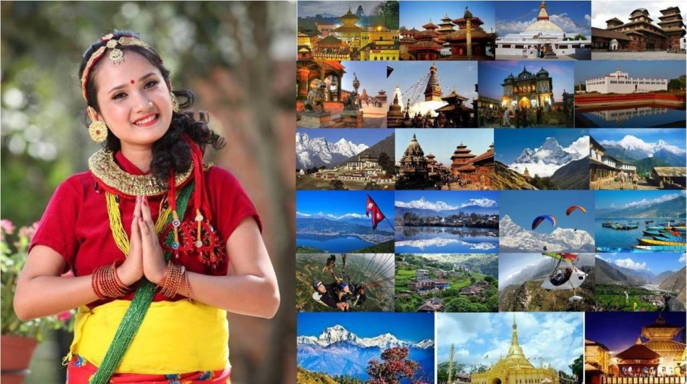

Our country Nepal is rich in natural beauties gifts, resources and wonders. There are many places and things of cultural, historical and religious importance. Mt. Everest, the highest peak in the world, lies in Nepal. We are proud of it. The snowcapped mountain peaks, beautiful water resources, the green forests of hypnotic beauty, flora and fauna, etc. tempt many tourists every year.Nepal is known as a suitable place to promote tourism. The nature has given us many things which are liked by tourists. Some tourists come here to enjoy the natural beauties and wonders. Some of them visit our country for trekking and climbing mountains. Some want to learn something about our history, culture, religion and so on. We can see that some tourists come here to enjoy their holidays.
Tourism plays a significant role in Nepal. We can get many advantages from it. Firstly, we can earn foreign currency which can be use for our development. Many people have got employed in the offices belonging to tourism. Thus, it helps to lessen the problems of unemployment. Tourists buy our goods, curios and native articles of our country. By the result, our cottage industries can get benefited. Tourism helps our hotel industry. They want to live in good hotels. Many expensive and good hotels have been providing services to them. Similarly, many tourist guides and porters are employed in it. We can learn their languages, cultures and traditions from the tourists. They also learn many things from us. The fame and glory of our nation get widened because they can be their achievements to their friends and relatives. Our country Nepal will be known to the rest part of the world. When they observe our good cultures, traditions and things, they expose them to their country.